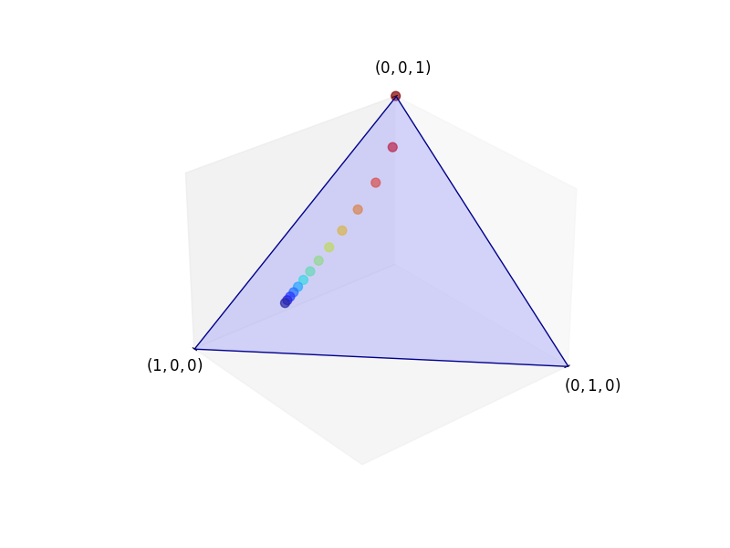
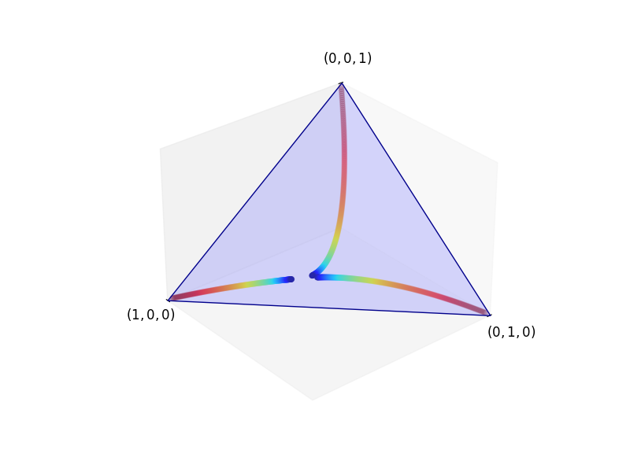

Persamaan Kolmogorov Maju
Selain yang tersedia di lingkungan ilmiah Python, kuliah ini memerlukan NumPy, Matplotlib, dan SciPy.
# Dependensi unit disediakan oleh lingkungan luring yang dikunci.
# Tidak ada instalasi paket pada saat pembaca dijalankan.Catatan adaptasi hilir. Sumber menjalankan
!pip install quantecondi dalam pembaca. Instalasi saat runtime dihapus agar edisi ini dapat diputar ulang secara luring dan deterministik. Sel kode serta posisinya dipertahankan sebagai permukaan provenance, sedangkan paketquantecontidak diperlukan oleh kode unit ini.
Gambaran umum
Dalam kuliah ini kita mendekati rantai Markov waktu kontinu dari sudut pandang yang lebih analitis.
Penekanannya adalah pada deskripsi aliran distribusi melalui persamaan diferensial bernilai vektor beserta solusinya.
Aliran distribusi ini menunjukkan bagaimana distribusi pada waktu \(t\) yang berkaitan dengan suatu rantai Markov \((X_t)\) berubah seiring waktu.
Aliran distribusi akan diidentifikasi dengan masalah nilai awal yang dibangkitkan oleh persamaan diferensial biasa (ODE) linear otonom dalam ruang vektor.
Kita akan melihat bahwa solusi aliran tersebut dijelaskan oleh semigrup Markov.
Hal ini membawa kita kembali ke teori yang telah kita bangun; semua keterkaitannya akan diperjelas dengan saksama.
Agar tidak teralihkan oleh rincian teknis, kita tetap menunda pembahasan ruang keadaan tak berhingga dan sepanjang kuliah ini mengasumsikan bahwa \(|S|=n\).
Seperti sebelumnya, \(\dD\) adalah himpunan semua distribusi pada \(S\).
Kita akan memakai impor berikut.
import numpy as np
import matplotlib.pyplot as plt
from scipy.linalg import expm
from matplotlib import cm
from mpl_toolkits.mplot3d.art3d import Poly3DCollectionCatatan adaptasi hilir. Impor
scipy as sp,quantecon as qe,numba.njit, danAxes3Dpada sumber tidak dipakai oleh unit ini dan dihapus. Semua impor yang diperlukan oleh sel komputasi tetap dipertahankan.
Dari Persamaan Beda ke ODE
Sebelumnya kita menghasilkan gambar berikut, yang menunjukkan bagaimana distribusi berkembang seiring waktu bagi model persediaan di bawah parameterisasi tertentu:

(Warna panas menunjukkan waktu awal dan warna sejuk menunjukkan waktu yang lebih akhir.)
Kita juga mempelajari hubungan aliran ini dengan persamaan Kolmogorov mundur, yang merupakan sebuah ODE.
Pada bagian ini kita menelaah aliran distribusi serta kaitannya dengan ODE dan rantai Markov waktu kontinu secara lebih sistematis.
Tinjauan Kasus Waktu Diskret
Misalkan \((X_t)\) adalah rantai Markov waktu diskret dengan matriks Markov \(P\).
Ingat bahwa, dalam kasus waktu diskret, distribusi \(\psi_t\) dari \(X_t\) diperbarui menurut
\[ \psi_{t+1} = \psi_t P, \qquad \psi_0 \text{ adalah unsur tertentu dalam } \dD, \]
di mana distribusi dipahami sebagai vektor baris.
Berikut visualisasi untuk kasus \(S=\{0,1,2\}\), sehingga \(\dD\) adalah simpleks standar dalam \(\RR^3\).
Kondisi awalnya adalah (0, 0, 1) dan matriks Markovnya
adalah
P = ((0.9, 0.1, 0.0),
(0.4, 0.4, 0.2),
(0.1, 0.1, 0.8))Tampilkan kode sel 1
def unit_simplex(angle):
fig = plt.figure(figsize=(8, 6))
ax = fig.add_subplot(111, projection='3d')
vtx = [[0, 0, 1],
[0, 1, 0],
[1, 0, 0]]
tri = Poly3DCollection([vtx], color='darkblue', alpha=0.3)
tri.set_facecolor([0.5, 0.5, 1])
ax.add_collection3d(tri)
ax.set(xlim=(0, 1), ylim=(0, 1), zlim=(0, 1),
xticks=(1,), yticks=(1,), zticks=(1,))
ax.set_xticklabels(['$(1, 0, 0)$'], fontsize=12)
ax.set_yticklabels(['$(0, 1, 0)$'], fontsize=12)
ax.set_zticklabels(['$(0, 0, 1)$'], fontsize=12)
ax.xaxis.majorTicks[0].set_pad(15)
ax.yaxis.majorTicks[0].set_pad(15)
ax.zaxis.majorTicks[0].set_pad(35)
ax.view_init(30, angle)
# Pindahkan sumbu ke titik asal.
ax.xaxis._axinfo['juggled'] = (0, 0, 0)
ax.yaxis._axinfo['juggled'] = (1, 1, 1)
ax.zaxis._axinfo['juggled'] = (2, 2, 0)
ax.grid(False)
return ax
def convergence_plot(ψ, n=14, angle=50):
ax = unit_simplex(angle)
P = ((0.9, 0.1, 0.0),
(0.4, 0.4, 0.2),
(0.1, 0.1, 0.8))
P = np.array(P)
colors = cm.jet_r(np.linspace(0.0, 1, n))
x_vals, y_vals, z_vals = [], [], []
for t in range(n):
x_vals.append(ψ[0])
y_vals.append(ψ[1])
z_vals.append(ψ[2])
ψ = ψ @ P
ax.scatter(x_vals, y_vals, z_vals, c=colors, s=50, alpha=0.7, depthshade=False)
return ψ
ψ = convergence_plot((0, 0, 1))
plt.show()
Data aksesibel untuk gambar sel 4
Unduh seluruh data deterministik sebagai CSV
| langkah | p0 | p1 | p2 |
|---|---|---|---|
| 0 | 0.000000000000 | 0.000000000000 | 1.000000000000 |
| 1 | 0.100000000000 | 0.100000000000 | 0.800000000000 |
| 2 | 0.210000000000 | 0.130000000000 | 0.660000000000 |
| 3 | 0.307000000000 | 0.139000000000 | 0.554000000000 |
| 4 | 0.387300000000 | 0.141700000000 | 0.471000000000 |
| 5 | 0.452350000000 | 0.142510000000 | 0.405140000000 |
| 6 | 0.504633000000 | 0.142753000000 | 0.352614000000 |
| 7 | 0.546532300000 | 0.142825900000 | 0.310641800000 |
| 8 | 0.580073610000 | 0.142847770000 | 0.277078620000 |
| 9 | 0.606913219000 | 0.142854331000 | 0.250232450000 |
| 10 | 0.628386874500 | 0.142856299300 | 0.228756826200 |
| 11 | 0.645566389390 | 0.142856889790 | 0.211576720820 |
| 12 | 0.659310178449 | 0.142857066937 | 0.197832754614 |
| 13 | 0.670305262840 | 0.142857120081 | 0.186837617079 |
Alternatif aksesibel untuk gambar. Titik-titik memperlihatkan urutan distribusi yang bermula di \((0,0,1)\) dan bergerak di dalam simpleks standar di bawah pembaruan \(\psi\mapsto\psi P\). Warna berubah dari panas pada waktu awal menjadi sejuk pada waktu yang lebih akhir.
Dalam pengertian tertentu, rantai Markov waktu diskret “adalah” persamaan beda linear homogen dalam ruang distribusi.
Untuk memperjelasnya, andaikan \(G\) adalah pemetaan linear pada ruang ambien vektor baris \(\RR^n\) yang memetakan \(\dD\) ke dirinya sendiri, lalu tuliskan persamaan beda
\[ \psi_{t+1} = G(\psi_t) \quad \text{dengan } \psi_0 \in \dD \text{ tertentu}. \]
Karena \(G\) adalah pemetaan linear pada ruang berdimensi hingga, pemetaan tersebut dapat direpresentasikan oleh sebuah matriks.
Catatan koreksi hilir. Sumber menyebut \(\dD\) sebagai ruang vektor berdimensi hingga. Himpunan distribusi \(\dD\) adalah simpleks probabilitas, bukan ruang vektor. Pernyataan dirumuskan pada ruang ambien \(\RR^n\), dengan syarat \(G(\dD)\subseteq\dD\), sehingga argumen matriksnya tetap tepat.
Selain itu, matriks \(P\) merupakan matriks Markov jika dan hanya jika \(\psi\mapsto\psi P\) memetakan \(\dD\) ke dirinya sendiri (periksalah jika Anda belum pernah melakukannya).
Jadi, di bawah syarat-syarat tersebut, persamaan beda kita persamaan gdiff2 secara unik mengidentifikasi suatu matriks Markov beserta kondisi awal \(\psi_0\).
Bersama-sama, objek-objek ini mengidentifikasi distribusi bersama suatu rantai Markov waktu diskret, sebagaimana dijelaskan sebelumnya.
Beralih ke Waktu Kontinu
Kita baru saja berargumen bahwa rantai Markov waktu diskret dapat diidentifikasi dengan persamaan beda linear yang berkembang dalam \(\dD\).
Hal ini memberi petunjuk kuat bahwa rantai Markov waktu kontinu dapat diidentifikasi dengan ODE linear yang berkembang dalam \(\dD\).
Intuisi ini benar dan penting.
Bagian selanjutnya dari kuliah ini memetakan gagasan-gagasan utamanya.
ODE dalam Ruang Distribusi
Perhatikan persamaan diferensial linear
\[ \psi_t' = \psi_t Q, \qquad \psi_0 \text{ adalah unsur tertentu dalam } \dD, \]
di mana
- \(Q\) adalah matriks \(n\times n\),
- distribusi kembali dipahami sebagai vektor baris, dan
- turunan diambil unsur demi unsur, sehingga
\[ \psi_t' = \begin{pmatrix} \frac{d}{dt} \psi_t(x_1) & \cdots & \frac{d}{dt} \psi_t(x_n) \end{pmatrix}. \]
Solusi ODE Vektor Linear
Dengan memakai eksponensial matriks, solusi tunggal masalah nilai awal persamaan ode_mc adalah
\[ \psi_t = \psi_0 P_t \quad \text{dengan } P_t := e^{tQ}. \]
Untuk memeriksa bahwa persamaan cmc_sol adalah solusi, kita kembali memakai persamaan expoderiv untuk memperoleh
\[ \frac{d}{d t} P_t = Q e^{tQ} = e^{tQ} Q. \]
Kesamaan pertama dapat ditulis sebagai \(P_t'=QP_t\), dan ini tepat merupakan persamaan Kolmogorov mundur.
Kesamaan kedua dapat ditulis sebagai
\[ P_t' = P_t Q \]
dan disebut persamaan Kolmogorov maju.
Dengan menerapkan persamaan Kolmogorov maju, kita memperoleh
\[ \frac{d}{d t} \psi_t = \frac{d}{d t} \psi_0 P_t = \psi_0 \frac{d}{d t} P_t = \psi_0 P_t Q = \psi_t Q. \]
Hal ini menegaskan bahwa persamaan cmc_sol menyelesaikan persamaan ode_mc.
Berikut contoh tiga aliran distribusi dengan dinamika yang dibangkitkan oleh persamaan ode_mc, masing-masing bermula di dekat satu titik sudut.
Kode tersebut memakai persamaan cmc_sol dengan matriks \(Q\) yang diberikan oleh
Q = ((-3, 2, 1),
(3, -5, 2),
(4, 6, -10))Tampilkan kode sel 2
Q = np.array(Q)
ψ_00 = np.array((0.01, 0.01, 0.98))
ψ_01 = np.array((0.01, 0.98, 0.01))
ψ_02 = np.array((0.98, 0.01, 0.01))
ax = unit_simplex(angle=50)
def flow_plot(ψ, h=0.001, n=400, angle=50):
colors = cm.jet_r(np.linspace(0.0, 1, n))
x_vals, y_vals, z_vals = [], [], []
for t in range(n):
x_vals.append(ψ[0])
y_vals.append(ψ[1])
z_vals.append(ψ[2])
ψ = ψ @ expm(h * Q)
ax.scatter(x_vals, y_vals, z_vals, c=colors, s=20, alpha=0.2, depthshade=False)
flow_plot(ψ_00)
flow_plot(ψ_01)
flow_plot(ψ_02)
plt.show()
Data aksesibel untuk gambar sel 6
Unduh seluruh data deterministik sebagai CSV
| lintasan | langkah | waktu | p0 | p1 | p2 |
|---|---|---|---|---|---|
| sudut-0 | 0 | 0.000 | 0.010000000000 | 0.010000000000 | 0.980000000000 |
| sudut-0 | 100 | 0.100 | 0.276808198802 | 0.322422833377 | 0.400768967821 |
| sudut-0 | 200 | 0.200 | 0.398765813577 | 0.384843590945 | 0.216390595477 |
| sudut-0 | 300 | 0.300 | 0.457824503669 | 0.386001058441 | 0.156174437890 |
| sudut-0 | 399 | 0.399 | 0.487411071290 | 0.376755922705 | 0.135833006005 |
| sudut-1 | 0 | 0.000 | 0.010000000000 | 0.980000000000 | 0.010000000000 |
| sudut-1 | 100 | 0.100 | 0.236843004382 | 0.652745364148 | 0.110411631470 |
| sudut-1 | 200 | 0.200 | 0.364959962664 | 0.503917654238 | 0.131122383098 |
| sudut-1 | 300 | 0.300 | 0.435834934664 | 0.432121754887 | 0.132043310449 |
| sudut-1 | 399 | 0.399 | 0.474326624700 | 0.396247114271 | 0.129426261029 |
| sudut-2 | 0 | 0.000 | 0.980000000000 | 0.010000000000 | 0.010000000000 |
| sudut-2 | 100 | 0.100 | 0.766991507249 | 0.162562055700 | 0.070446437051 |
| sudut-2 | 200 | 0.200 | 0.653063280526 | 0.249620187290 | 0.097316532184 |
| sudut-2 | 300 | 0.300 | 0.591903476139 | 0.298042782417 | 0.110053741443 |
| sudut-2 | 399 | 0.399 | 0.559240049216 | 0.324418136345 | 0.116341814439 |
(Warna distribusi menjadi semakin sejuk seiring waktu, sehingga kondisi awal ditunjukkan oleh warna panas.)
Catatan koreksi hilir. Ketiga vektor awal pada sumber memakai
0.99sebagai komponen dominan sehingga jumlah komponennya \(1.01\) dan titiknya berada di luar simpleks probabilitas. Komponen tersebut dikoreksi menjadi0.98; kini setiap vektor tidak negatif, jumlah komponennya tepat satu, dan terletak di dekat—bukan tepat pada—masing-masing titik sudut.
Alternatif aksesibel untuk gambar. Tiga urutan titik memperlihatkan aliran distribusi dari lingkungan masing-masing titik sudut simpleks di bawah \(\psi_t=\psi_0e^{tQ}\). Pada setiap lintasan, warna panas menandai waktu awal dan warna sejuk menandai waktu yang lebih akhir.
Persamaan Maju versus Mundur
Sebagaimana ditunjukkan pembahasan di atas, kita dapat mengambil persamaan Kolmogorov maju \(P_t'=P_tQ\) dan mengalikannya dari kiri dengan sebarang distribusi \(\psi_0\) untuk memperoleh ODE distribusi \(\psi_t'=\psi_tQ\).
Dalam pengertian ini, persamaan Kolmogorov maju dapat dipahami sebagai mendorong distribusi maju dalam waktu.
Secara analog, kita dapat mengambil persamaan Kolmogorov mundur \(P_t'=QP_t\) dan mengalikannya dari kanan dengan sebarang vektor \(h\) untuk memperoleh
\[ (P_t h)' = Q P_t h. \]
Dengan mengingat bahwa \((P_t h)(x)=\EE[h(X_t)\,|\,X_0=x]\), ODE vektor ini memberi tahu kita bagaimana nilai harapan berkembang dengan pengondisian mundur ke waktu nol.
Persamaan maju dan mundur, bila masing-masing dipadukan dengan kondisi awal \(P_0=I\), secara unik menentukan solusi yang sama, yaitu \(P_t=e^{tQ}\).
ODE Bernilai Matriks versus Bernilai Vektor
ODE \(\psi_t'=\psi_tQ\) kadang-kadang disebut persamaan Fokker–Planck (meskipun istilah ini paling umum dipakai dalam konteks difusi).
Persamaan tersebut adalah ODE bernilai vektor yang menjelaskan evolusi suatu lintasan distribusi tertentu.
Sebagai perbandingan, persamaan Kolmogorov maju (seperti halnya persamaan mundur) merupakan persamaan diferensial pada matriks.
(Dan matriks sesungguhnya adalah pemetaan, yang mengirimkan vektor ke vektor.)
Bekerja pada tingkat ini kurang intuitif dan lebih abstrak daripada bekerja dengan persamaan Fokker–Planck.
Namun, pada akhirnya, objek yang ingin kita jelaskan adalah semigrup Markov.
Persamaan Kolmogorov maju dan mundur adalah ODE yang mendefinisikan objek mendasar tersebut.
Mempertahankan Distribusi
Dalam simulasi di atas, \(Q\) dipilih dengan cermat agar alirannya tetap berada dalam \(\dD\).
Sifat tepat apa yang kita perlukan pada \(Q\) agar \(\psi_t\) selalu berada dalam \(\dD\)?
Ini pertanyaan penting karena kita sedang membangun korespondensi yang tepat antara ODE linear yang berkembang dalam \(\dD\) dan rantai Markov waktu kontinu.
Ingat bahwa aturan pembaruan linear \(\psi\mapsto\psi P\) memetakan \(\dD\) ke dirinya sendiri jika dan hanya jika \(P\) adalah matriks Markov.
Karena itu, kita sekarang dapat menyatakan ulang pertanyaan utama kita mengenai invariansi pada \(\dD\):
Sifat apa yang harus dikenakan pada \(Q\) agar \(P_t=e^{tQ}\) merupakan matriks Markov untuk semua \(t\geq0\)?
Matriks persegi \(Q\) disebut matriks intensitas jika jumlah entri setiap baris \(Q\) sama dengan nol dan \(Q(x,y)\geq0\) setiap kali \(x\ne y\).
Jika \(Q\) adalah matriks pada \(S\) dan \(P_t:=e^{tQ}\), maka pernyataan-pernyataan berikut ekuivalen:
- \(P_t\) adalah matriks Markov untuk semua \(t\geq0\).
- \(Q\) adalah matriks intensitas.
Catatan klarifikasi hilir. Sumber menulis “untuk semua \(t\)”. Karena semigrup Markov di sini berindeks waktu nonnegatif, kuantornya dinyatakan secara eksplisit sebagai \(t\geq0\); tidak ada klaim mengenai waktu negatif.
Pembuktiannya berkaitan dengan pembuktian teorema rantai lompatan ke semigrup dan disajikan sebagai latihan terselesaikan di bawah.
Jika \(Q\) adalah matriks intensitas pada \(S\) yang berhingga dan \(P_t=e^{tQ}\) untuk semua \(t\geq0\), maka \((P_t)\) adalah semigrup Markov.
Kita menyebut \((P_t)\) semigrup Markov yang dibangkitkan oleh \(Q\).
Kelak kita akan melihat bahwa hasil ini meluas ke kasus \(|S|=\infty\) di bawah beberapa pembatasan ringan pada \(Q\).
Rantai Lompatan
Mari kita kembali ke rantai \((X_t)\) yang dibangun dari pasangan rantai lompatan \((\lambda,K)\) dalam algoritma rantai lompatan.
Kita memperoleh semigrup
\[ P_t = e^{tQ} \quad \text{dengan} \quad Q(x, y) := \lambda(x) (K(x, y) - I(x, y)). \]
Dengan memakai fakta bahwa \(K\) adalah matriks Markov dan fungsi laju lompatan \(\lambda\) tidak negatif, Anda dapat dengan mudah memeriksa bahwa \(Q\) memenuhi definisi matriks intensitas.
Jadi \((P_t)\), semigrup Markov bagi rantai lompatan \((X_t)\), adalah semigrup yang dibangkitkan oleh matriks intensitas \(Q(x,y)=\lambda(x)(K(x,y)-I(x,y))\).
Kita dapat menurunkan \(P_t=e^{tQ}\) untuk memperoleh persamaan Kolmogorov maju \(P_t'=P_tQ\).
Kemudian kita dapat mengalikan dari kiri dengan \(\psi_0\in\dD\) untuk memperoleh \(\psi_t'=\psi_tQ\), yaitu persamaan Fokker–Planck.
Secara lebih eksplisit, untuk \(y\in S\) tertentu dan dengan mengingat syarat rantai lompatan \(K(y,y)=0\),
\[ \psi_t'(y) = \sum_{x \not= y} \psi_t(x) \lambda(x) K(x, y) - \psi_t(y) \lambda(y). \]
Laju aliran probabilitas yang masuk ke \(y\) sama dengan arus masuk dari keadaan lain dikurangi arus keluar.
Catatan klarifikasi hilir. Bentuk arus keluar \(-\psi_t(y)\lambda(y)\) pada rumus sumber memakai syarat \(K(y,y)=0\) dari definisi pasangan rantai lompatan yang diwarisi. Syarat tersebut dinyatakan kembali secara lokal agar rumus tidak tampak berlaku bagi matriks Markov yang membolehkan transisi-diri.
Ringkasan
Kita telah melihat bahwa setiap matriks intensitas \(Q\) pada \(S\) mendefinisikan semigrup Markov melalui \(P_t=e^{tQ}\).
Mulai sekarang, kita akan mengatakan bahwa \((X_t)\) adalah rantai Markov dengan matriks intensitas \(Q\) jika \((X_t)\) adalah rantai Markov dengan semigrup Markov \((e^{tQ})\).
Meskipun pembahasan kita berlangsung dalam konteks ruang keadaan berhingga, kelak kita akan melihat bahwa gagasan-gagasan ini berlaku pula pada ruang keadaan tak berhingga di bawah pembatasan ringan.
Kita juga telah mengisyaratkan fakta bahwa setiap rantai Markov waktu kontinu merupakan rantai Markov dengan matriks intensitas \(Q\) untuk suatu \(Q\) yang dipilih secara tepat.
Kelak kita akan membuktikan bahwa pernyataan ini selalu benar ketika \(S\) berhingga dan benar di bawah syarat ringan ketika \(S\) tak berhingga terhitung.
Matriks intensitas penting karena
- matriks tersebut merupakan deskripsi infinitesimal alami bagi semigrup Markov,
- matriks tersebut sering mudah dituliskan dalam penerapan, dan
- matriks tersebut memberikan deskripsi dinamika yang intuitif.
Kelak kita akan melihat bahwa, bagi suatu matriks intensitas \(Q\), unsur-unsurnya dipahami sebagai berikut:
- ketika \(x\ne y\), nilai \(Q(x,y)\) adalah “laju meninggalkan \(x\) menuju \(y\)”, dan
- \(-Q(x,x)\geq0\) adalah “laju meninggalkan \(x\)”.
Latihan
Misalkan \((P_t)\) adalah semigrup Markov sedemikian sehingga \(t\mapsto P_t(x,y)\) terdiferensialkan pada semua \(t\geq0\) dan \((x,y)\in S\times S\).
(Turunan pada \(t=0\) adalah turunan kanan biasa.)
Definisikan (secara titik demi titik, pada setiap \((x,y)\))
\[ Q := P'_0 = \lim_{h \downarrow 0} \frac{P_h - I}{h}. \]
Dengan mengasumsikan bahwa limit ini ada sehingga \(Q\) terdefinisi dengan baik, tunjukkan bahwa
\[ P'_t = P_t Q \quad \text{dan} \quad P'_t = Q P_t \]
keduanya berlaku. (Keduanya masing-masing adalah persamaan Kolmogorov maju dan persamaan Kolmogorov mundur.)
Solusi Misalkan \((P_t)\) adalah semigrup Markov dan \(Q\) didefinisikan seperti dalam pernyataan latihan.
Tetapkan \(t\geq0\) dan \(h>0\).
Dengan memadukan sifat semigrup dan linearitas dengan syarat \(P_0=I\), kita memperoleh
\[ \frac{P_{t+h} - P_t}{h} = \frac{P_t P_h - P_t}{h} = \frac{P_t (P_h - I)}{h}. \]
Mengambil \(h\downarrow0\) dan memakai definisi \(Q\) memberikan \(P_t'=P_tQ\), yaitu persamaan Kolmogorov maju.
Untuk persamaan Kolmogorov mundur, kita mengamati bahwa
\[ \frac{P_{t+h} - P_t}{h} = \frac{P_h P_t - P_t}{h} = \frac{(P_h - I) P_t}{h} \]
juga berlaku. Mengambil \(h\downarrow0\) menghasilkan persamaan Kolmogorov mundur.
Ingat model kita bagi rantai lompatan dengan intensitas lompatan yang bergantung pada keadaan dan diberikan oleh fungsi laju \(x\mapsto\lambda(x)\).
Setelah menunggu selama waktu eksponensial berlaju \(\lambda(x)\in(0,\infty)\), keadaan bertransisi dari \(x\) ke \(y\) dengan probabilitas \(K(x,y)\).
Kita memperoleh bahwa semigrup terkait \((P_t)\) memenuhi persamaan Kolmogorov mundur \(P_t'=QP_t\) dengan
\[ Q(x, y) := \lambda(x) (K(x, y) - I(x, y)). \]
Tunjukkan bahwa \(Q\) adalah matriks intensitas dan bahwa persamaan genfl berlaku.
Solusi Misalkan \(Q\) didefinisikan seperti dalam persamaan qeqagain.
Kita perlu menunjukkan bahwa \(Q\) tidak negatif di luar diagonal dan jumlah entri setiap barisnya sama dengan nol.
Pernyataan pertama langsung mengikuti ketaknegatifan \(K\) dan \(\lambda\).
Untuk pernyataan kedua, kita memakai fakta bahwa \(K\) adalah matriks Markov. Untuk setiap \(x\in S\),
\[ \sum_y Q(x,y) = \lambda(x)\left(\sum_y K(x,y)-\sum_y I(x,y)\right) = \lambda(x)(1-1) =0. \]
Catatan koreksi hilir. Sumber menulis singkatan \(Q1=\lambda(K1-1)\), yang ambigu secara dimensi bila \(\lambda\) dibaca sebagai vektor. Perhitungan per baris di atas menyatakan argumen yang sama tanpa memerlukan konvensi bahwa \(\lambda\) berarti matriks diagonal laju.
Terakhir, karena \(P_h=e^{hQ}\), deret eksponensial matriks memberikan, secara unsur demi unsur,
\[ P_h = I + hQ + O(h^2). \]
Dengan demikian
\[ \lim_{h\downarrow0}\frac{P_h-I}{h}=Q, \]
yang membuktikan persamaan genfl.
Catatan koreksi hilir. Jawaban sumber membuktikan bahwa \(Q\) adalah matriks intensitas, tetapi berhenti sebelum membuktikan klaim kedua yang diminta, yaitu persamaan genfl. Langkah eksponensial matriks di atas melengkapi jawaban tanpa mengubah pernyataan latihan.
Buktikan teorema ekuivalensi dengan mengadaptasi argumen dalam teorema rantai lompatan ke semigrup.
(Latihan ini tidak mudah, tetapi setidaknya layak dicoba.)
Petunjuk: Konstanta \(m\) dalam pembuktian dapat ditetapkan sebagai \(\max_x|Q(x,x)|\).
Solusi Andaikan \(Q\) adalah matriks intensitas, tetapkan \(t\geq0\), dan definisikan \(P_t=e^{tQ}\).
Pembuktian dari teorema rantai lompatan ke semigrup bahwa jumlah entri setiap baris \(P_t\) sama dengan satu berlaku langsung pada kasus sekarang.
Pembuktian ketaknegatifan \(P_t\) dapat diterapkan setelah beberapa modifikasi.
Untuk itu, tetapkan \(m:=\max_x|Q(x,x)|\).
Jika \(m=0\), seluruh unsur diagonal \(Q\) nol. Karena unsur luar diagonal tidak negatif dan jumlah setiap baris nol, semua unsur luar diagonal juga nol. Jadi \(Q=0\) dan \(P_t=I\), yang merupakan matriks Markov.
Sekarang andaikan \(m>0\) dan tetapkan \(\hat P:=I+Q/m\).
Anda dapat memeriksa bahwa \(\hat P\) adalah matriks Markov dan \(Q=m(\hat P-I)\).
Bagian selanjutnya dari pembuktian ketaknegatifan \(P_t\) tidak berubah dan tidak akan kita ulangi.
Kita menyimpulkan bahwa \(P_t\) adalah matriks Markov.
Catatan koreksi hilir. Sumber langsung mendefinisikan \(\hat P=I+Q/m\) tanpa menangani kemungkinan \(m=0\). Kasus nol dipisahkan di atas sebelum pembagian.
Untuk implikasi sebaliknya, andaikan \(P_t=e^{tQ}\) adalah matriks Markov untuk semua \(t\geq0\) dan misalkan \(1\) adalah vektor kolom yang semua unsurnya satu.
Karena jumlah entri setiap baris \(P_t\) sama dengan satu dan penurunan bersifat linear, kita dapat memakai persamaan Kolmogorov mundur untuk memperoleh
\[ Q 1 = Q P_t 1 = \left( \frac{d}{d t} P_t \right) 1 = \frac{d}{d t} (P_t 1) = \frac{d}{d t} 1 = 0. \]
Jadi jumlah entri setiap baris \(Q\) sama dengan nol.
Kita dapat memakai definisi eksponensial matriks untuk memperoleh, bagi setiap \(x,y\) dan \(t\geq0\),
\[ P_t(x, y) = \mathbb 1\{x = y\} + t Q(x, y) + o(t). \]
Dari kesamaan ini dan asumsi bahwa \(P_t\) adalah matriks Markov untuk semua \(t\geq0\), kita melihat bahwa unsur-unsur luar diagonal \(Q\) harus tidak negatif.
Jadi \(Q\) adalah matriks intensitas.